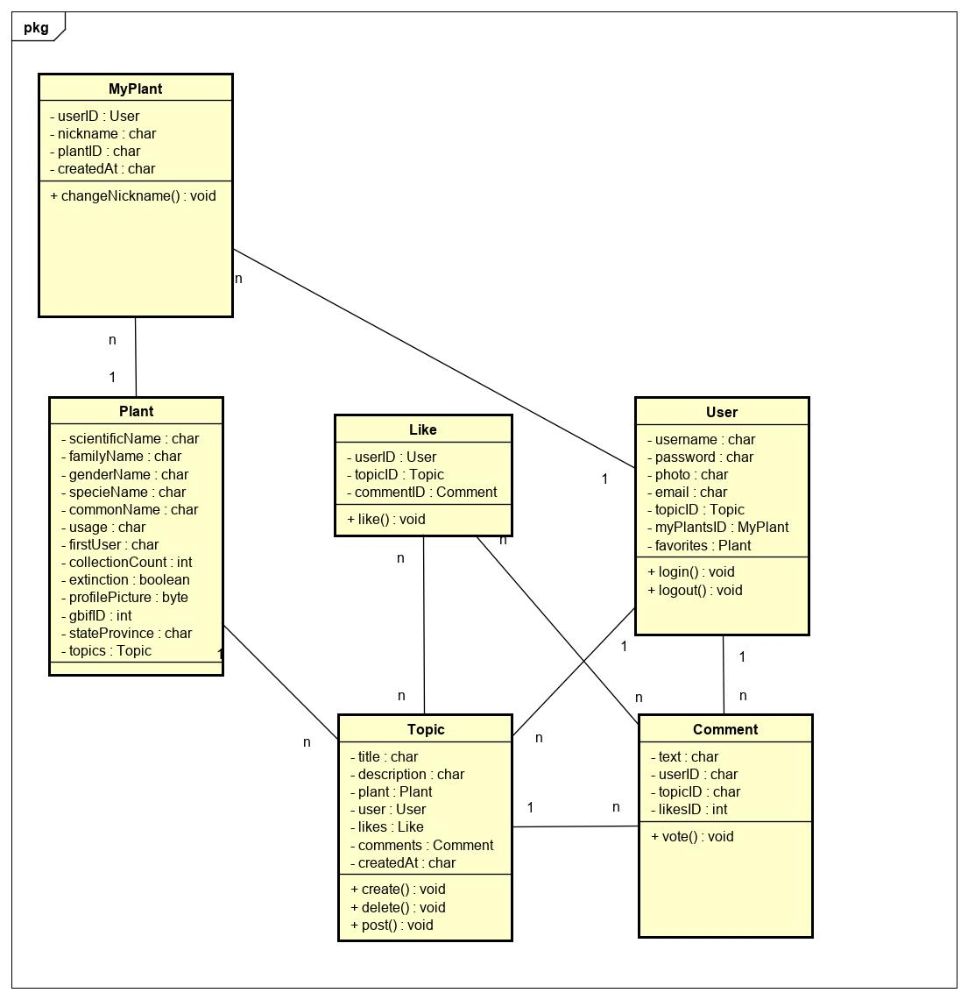
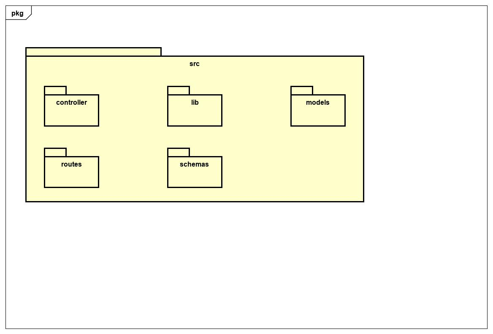

Documento de Arquitetura
Histórico de Versão
| Data | Versão | Descrição | Autor(es) |
|---|---|---|---|
| 12/09 | 0.1 | Criação da estrutura do documento | João Vítor |
| 13/09 | 0.2 | Atualização do sumário | João Vítor |
| 13/09 | 1.0 | Criação do Documento | Victor Hugo e Rafael Makaha |
| 27/09 | 1.1 | Atualização de diagrama de classes e backend pkg | Victor Hugo, Rafael Makaha e Ruan Moura |
| 27/09 | 1.2 | Atualização do nome do projeto: GaiaDex | Victor Hugo, Rafael Makaha e Ruan Moura |
| 13/12 | 2.0 | Refatoração do dos diagramas de classe e de pacotes | João Vítor e Rafael Makaha |
Sumário
2. Representação da Arquitetura
3. Metas e Restrições de Arquitetura
1. Introdução
1.1 Finalidade
Este documento tem por finalidade, demonstrar uma clara visão da arquitetura do projeto GaiaDex, a ser implementado, para todos os envolvidos no desenvolvimento; permitindo um entendimento em suas possíveis subdivisões, funções de componentes e reestruturações.
1.2 Escopo
Este documento descreve toda a arquitetura do projeto GaiaDex, explicando as soluções arquiteturais estabelecidas para o projeto. Com isso, possibilita-se a compreensão e o entendimento da base do projeto.
1.3 Referências
[1] MERN STACK. Disponível em MongoDB. Acesso em 13 de Setembro de 2020.
[2] MODELO EM TRÊS CAMADAS. Disponível em Wikipedia.Acesso em 13 de Setembro de 2020.
[3] Node.js wiki. Disponível em Wikipedia. Acesso em 13 de Setembro de 2020.
[4] ReactNative Wiki. Disponível em Wikipedia. Acesso em 13 de Setembro de 2020.
[5] Expo Wiki. Disponível em expo.io. Acesso em 13 de Setembro de 2020.
1.4 Visão Geral
O documento fornece detalhadamente, a nível de compreensão, a arquitetura do projeto. Escolhas de padrões arquiteturais, linguagens, frameworks foram tomadas com base num senso de opinião do grupo a fim de facilitar o trabalho e desenvolvimento com tais tecnologias: Nodejs e React Native.
2. Representação da Arquitetura
O desenho arquitetural do projeto GaiaDex se faz pelo uso do modelo em três camadas, utilizando-se a MERN Stack - MongoDB, Express, React e NodeJS.
O modelo em três camandas promove o desacoplamento das partes do projeto nas seguies camadas: camada de apresentação - onde há a interação com o usuário -; camada de negócio - onde há as funções e regras de todo o negócio, não havendo uma interface para o usuário -; e a camada de dados - responsável por armazenar as informações e dados a serem manipulados.
A MERN Stack é a solução completa em Javascript para o desenvolvimento de aplicações no modelo de três camadas, proporcionando ferramentas para desenvolvimento e evolução de todas as três camadas.
2.1 Arquitetura Nodejs

Node.js é um ambiente de desenvolvimento (framework) JavaScript de código aberto, multiplataforma, que executa o código JavaScript fora de um navegador web. Ele permite aos desenvolvedores usarem da linguagem para escrever scripts e automação com servidores, para produzir conteúdo dinâmico de páginas web antes da mesma ser enviada para o navegador do usuário.[3]
O framework permite o uso da arquitetura MC proveniente da arquitetura MVC, deixando de fora a parte que lida com a interface do usuário, a qual será função de outra tecnologia: ReactNative.

Também conta com um outro framework para seus aplicativos web, o Express, que fornece um conjunto de recursos e ferramentas mais robustas, minimalista e flexível.
Na camada de bancos de dados, o MongoDB é o sistema de gerenciamento de bancos de dados (SGDB) responsável pela persistência dos dados na aplicação. Assim, sua principal funcionalidade é de armazenar dados de maneira segura e de retorná-los quando forem requisitados.
2.2 Arquitetura React Native

React Native é uma estrutura de aplicativo móvel open-source (aberta para o público), criada pelo Facebook, Inc. Ele é usado para desenvolver aplicativos para Android, iOS, Web e UWP, permitindo que os desenvolvedores usem o React juntamente com os recursos nativos da plataforma[4]. Também pode ser descrito como uma biblioteca JavaScript declarativa, eficiente e flexível que permite compor UIs complexas a partir de 'componentes', que são pequenos e isolados códigos.

Para auxiliar o desenvolvimento em ReactNative, dispoem-se do framework 'Expo' o qual facilita o desenvolvimento do mesmo devido a não-necessidade de emular android. O Expo é uma plataforma de código aberto para fazer aplicativos nativos universais que são executados no Android, iOS e web. Ele inclui um tempo de execução universal e bibliotecas que permitem que você construa aplicativos nativos escrevendo React e JavaScript. Este repositório é onde o software do cliente Expo é desenvolvido e inclui os aplicativos, módulos, aplicativos e muito mais do cliente[5].
3. Metas e Restrições de Arquitetura
O desenvolvimento do projeto será em React-Native 0.62.x bem como Express 4.x.x, e para utilização das ferramentas é necessário o requerimento do NodeJS 14.x.x.
O desenvolvimento deverá estar de acordo as boas práticas de programação e requisitos não funcionais para que facilite a manutenção por outras equipes.
GaiaDex será um Portable Web Application (PWA), ou seja, um aplicativo portável para multiplas plataformas móveis. A aplicação deve rodar em versões superiores a Andoird x.x e IOS x.x. Esta restrição se dá pelos requerimentos das tecnologias utilizadas no desenvolvimento do projeto.
4. Visão Lógica
4.1 Diagrama de Classes

4.2 Diagrama de Pacotes
BackEnd:

FrontEnd:

5. Visão de Implementação
A proposta da arquitetura MVC( Model, View, Controller) é fazer uma divisão em 3 camadas sobrepostas, de uma forma que o usuário só irá interagir com uma delas, no caso a View. Cada parte tem um valor diferente:
- Modelos (models) - Armazenamento de dados, definição dos estados das camadas e interpretação de requisições, que será controlada pelo Express.
- Visão (views) - Controle de layout e definição de design, que será controlada pelo React-Native.
- Controles (controllers) - Tráfego de informações entre todas as camadas, entre o Express e o React-Native.
6. Qualidade
O aplicativo seguirá o padrão de desenvolvimento definido nos frameworks utilizados que irá organizar as diversas camadas da aplicação sendo que cada camada tem sua função específica dentro do software. Onde será mantida uma boa organização do código facilitando a visualização, entendimento e implementação do código.